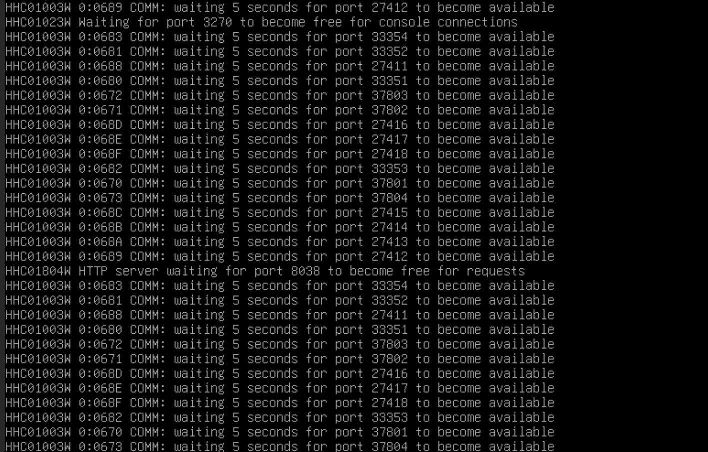
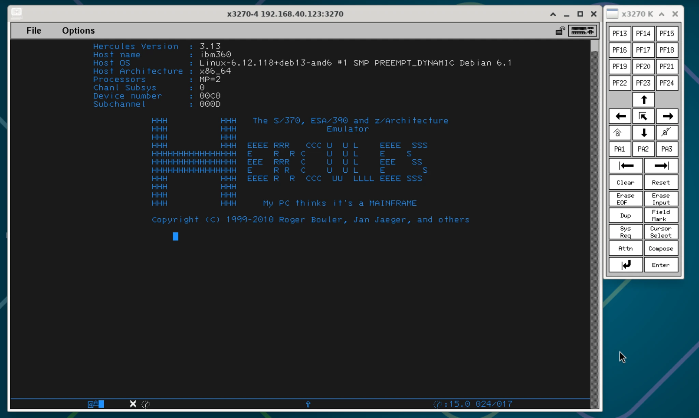
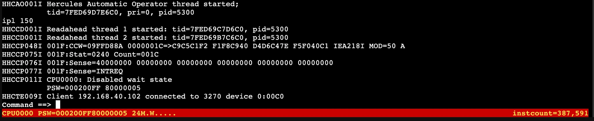
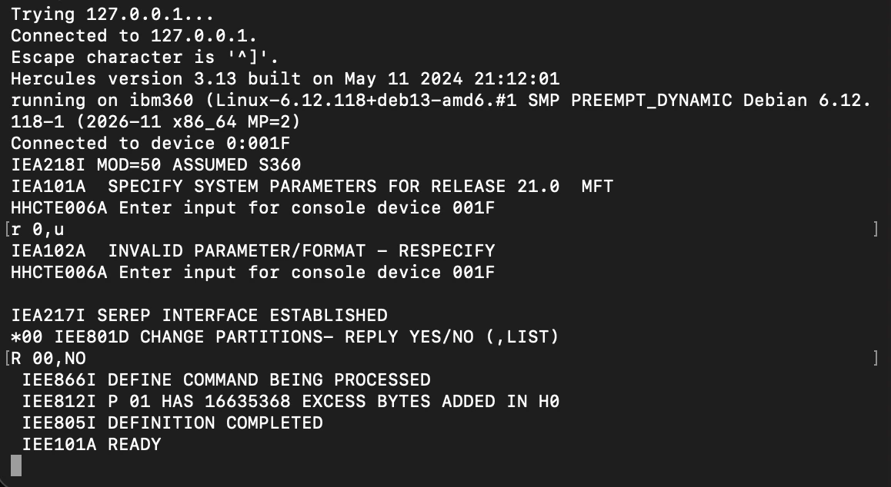

1. Contexto histórico
O System/360 foi anunciado em 1964. O OS/360 MFT (Multiprogramming with a Fixed number of Tasks) utiliza partições de memória para executar trabalhos. A Release 21 está documentada em manuais IBM de março de 1972. Esta experiência é independente do MVS 3.8j TK4- e aproxima-nos do trabalho de operador de um sistema batch.
2. Ambiente de teste
| VM | ibm360 · Debian 13 · Proxmox |
|---|---|
| Emulador | Hercules 3.13 |
| Rede | 192.168.40.123 · TCP 3270 |
| Disco de IPL | 0150 — dasd/sysres.150 |
| Consola | 001F — IBM 3215 |
| Terminais | 00C0–00C7 — IBM 3270 |
A origem exata do pacote OS/360 e o comando de lançamento com o ficheiro de configuração ainda não estão documentados neste artigo. O Hercules foi iniciado com os discos já configurados.
devlist
0150 3330 dasd/sysres.150
0151 3330 dasd/work01.151
0152 3330 dasd/herc01.152
0153 3330 dasd/spool1.153
0350 3330 dasd/mvtres.350
0351 3330 dasd/dlib01.351
0352 3330 dasd/work02.3523. Dificuldades iniciais
Foram observados conflitos em portas TCP, compatíveis com uma segunda instância do Hercules, embora a causa não tenha sido confirmada. O acesso 3270 chegou a ser recusado e posteriormente foi estabelecido.

O x3270 apresentava o logótipo Hercules, mas não permitia introduzir comandos do sistema operativo.

O primeiro IPL do disco 150 falhou com INTREQ no dispositivo 001F e o processador entrou em estado de espera desativada.

4. A solução: ligar a consola IBM 3215 antes do IPL
Noutra sessão SSH da VM, foi estabelecida uma ligação Telnet local à porta 3270. O Hercules atribuiu o dispositivo de consola 001F.
apt install -y telnet
telnet 127.0.0.1 3270
Connected to device 0:001FCom esta ligação aberta, na consola do Hercules:
ipl 150O sistema apresentou IEA218I MOD=50 ASSUMED S360 e IEA101A SPECIFY SYSTEM PARAMETERS FOR RELEASE 21.0 MFT. Ficou assim identificada a variante MFT, não MVT.
A resposta inicial r 0,u foi rejeitada com IEA102A. A solução foi carregar apenas em Enter. Depois, perante a pergunta de alteração das partições, respondeu-se:
*00 IEE801D CHANGE PARTITIONS- REPLY YES/NO (,LIST)
R 00,NO
IEE866I DEFINE COMMAND BEING PROCESSED
IEE805I DEFINITION COMPLETED
IEE101A READY
5. Estado e próximos testes
O arranque está confirmado. A sessão 3270 ainda não foi validada como interface de utilizador do OS/360. Ao contrário do MVS TK4-, não se demonstrou um ambiente TSO neste sistema. A execução de comandos de operador, submissão de JCL, leitores de cartões e impressão ficam para os próximos testes. O disco MVTRES está reconhecido, mas o MVT ainda não foi arrancado.
Ver também: MVS 3.8j TK4-.
6. Referências
IBM System/360 Operating System — MFT Supervisor, Release 21 (março de 1972). Referência histórica, não fonte do pacote instalado.